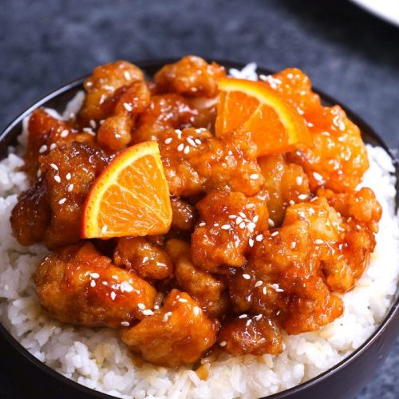

Orange Chicken

Description
Orange Chicken is a Chinese-American dish that blends sweet, sour, and citrous flavors to create a one of a kind flavour.
The main ingredient of course is Chicken. It is first covered in batter and then fried.
The orange sauce is a mixture of vinegar, soy sauce, sesame oil, sugar, orange zest and crushed crushed red peppers that thicken in a pan with deep fried battered chicken with will help thicken the sauce, It is super easy to make.
Ingredients
CHICKEN
- 2 lb boneless, skinless chicken thighs
- 1 egg
- salt
- 1 teaspoon white pepper
- 1 cup cornstarch
- 3 cups flour
- 2 tablespoons oil
ORANGE SAUCE
- 1 tablespoon oil
- 1/4 teaspoon chili flake
- 1 tablespoon garlic, minced
- 1/2 teaspoon ginger, minced
- 1/4 cup sugar
- 1/4 brown sugar
- 1/4 cup orange juice
- 1/4 cup white vinegar
- 2 tablespoons corn starch
- 1 teaspoon sesame oil
Preperation
- Cut chicken into 1x1-inch cubes
- combine salt, white pepper, cornstarch, and flour in a bowl
- Add the egg, 1.5 cups of water, and oil until it is all mixed well
- Add the chicken to the batter and refrigerate at least 30 minutes.
- Heat oil in a wok or heacy bottom pan to 350˚F
- Gently add theh chicken and cook for 5-6 minutes until golden brown
- Remove the chicken onced fried and set aside
- Set pot over medium-high heat and add the oil
- Once oil begins to shimmer, add the red pepper flakes, ginger, and garlic, and cook for 30 seconds, stirring constantly
- Add the sugar and brown sugar, and stir
- Add the orange juice and allow the sugars to begin to dissolbe in the liquied
- Add the vinegar and soy sauce
- Mix the cornstarch with water and then Add to the pot and contiue to stir
- Once mix has consistency of syrup add the chicken and mix
- add sesame and enjoy